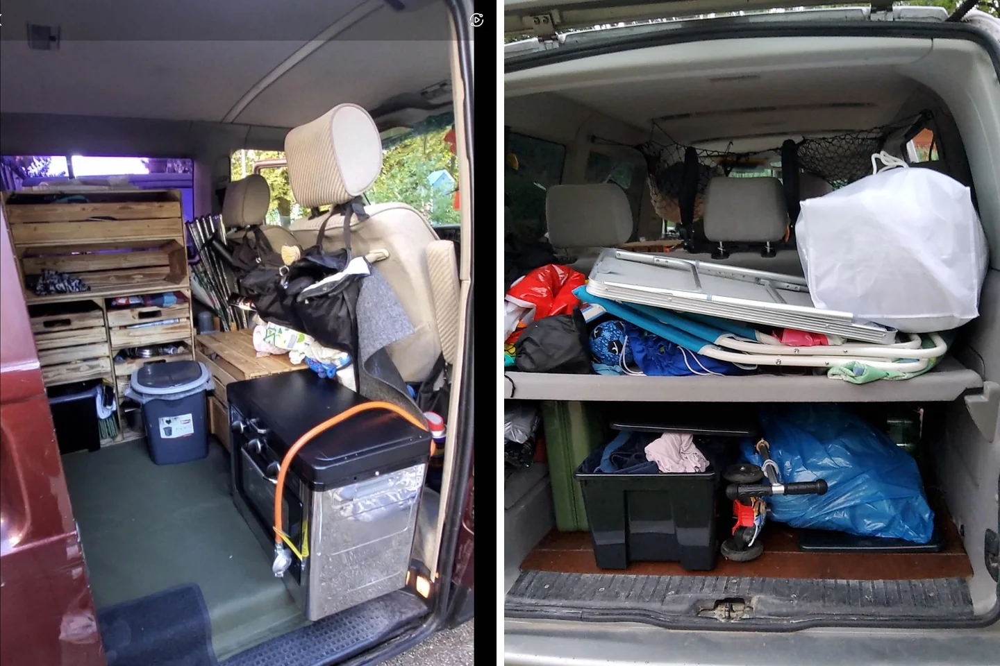

Meine Camper-Packliste — was habe ich wirklich alles dabei?

„Was hast du eigentlich alles dabei?“ Diese Frage bekomme ich immer wieder. Die ehrliche Antwort sieht man auf den Fotos: ziemlich viel — aber nicht wahllos. Nach Monaten im T4 hatte fast jeder Gegenstand eine Aufgabe und einen festen Platz.
Schlafen und Wärme
- Matratze, Bettzeug und zusätzliche warme Decken
- Kissen und etwas, das Feuchtigkeit unter der Matratze im Blick behält
- warme Schlafkleidung für kalte Nächte
- bei Wintertouren: funktionierende Heizung und passender Brennstoff
Kochen und Vorräte
- Kochstelle und mein kleiner Ofen
- Topf, Pfanne, Backform und Kaffeekocher
- Messer, Brett, Besteck, Becher und wenige, robuste Teller
- Gewürze, haltbare Grundzutaten und Wasser
- Spülmittel, Lappen und kleine Müllbeutel
Hygiene und Toilette
- mobile Toilettenlösung mit passenden Beuteln und saugendem Material
- Toilettenpapier, Handdesinfektion und Waschzeug
- Handtücher, die schnell trocknen
- eine geschlossene, gut erreichbare Aufbewahrung
Strom, Werkzeug und Pannenhilfe
- Ladekabel für Telefon und Kamera
- Zusatzbatterie und die dazugehörigen Anschlüsse
- Werkzeug für kleine Arbeiten, Sicherungen und Leuchtmittel
- Warnweste, Warndreieck und Erste-Hilfe-Ausrüstung
- Fahrzeugpapiere, Schutzbriefdaten und wichtige Telefonnummern
Draußen wohnen
- kleiner Campingtisch und Sitzmöglichkeit
- Outdoor-Teppich für den Platz vor der Schiebetür
- Dach- oder Gepäcktasche für leichte, sperrige Dinge
- Taschenlampe, Verlängerung und je nach Platz passende Adapter
Was nicht mitmuss
Doppelte Küchengeräte, zu viele Kleidungsstücke und große Vorräte für jede denkbare Situation fressen Platz. In Europa kann ich fast überall nachkaufen oder waschen. Genau diese Erkenntnis hat meine Packliste mit jeder Reise kleiner und ehrlicher gemacht.
Meine Liste ist kein starres Gesetz. Sommer, Winter, Wochenende oder zehn Monate verändern den Bedarf. Aber die Kategorien bleiben: schlafen, essen, sauber bleiben, Strom haben, sicher fahren und draußen leben. Wenn diese Bereiche funktionieren, fühlt sich selbst ein voll gepackter T4 nicht wie Chaos an.
Bis bald und immer gute Fahrt,
eure Tussy 💛